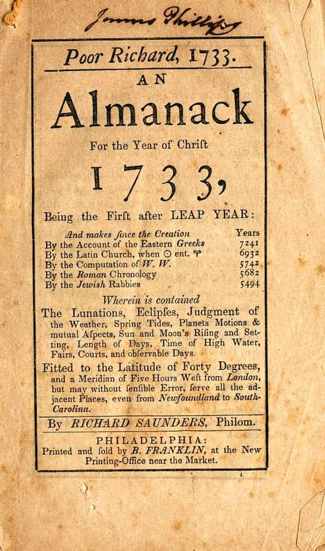
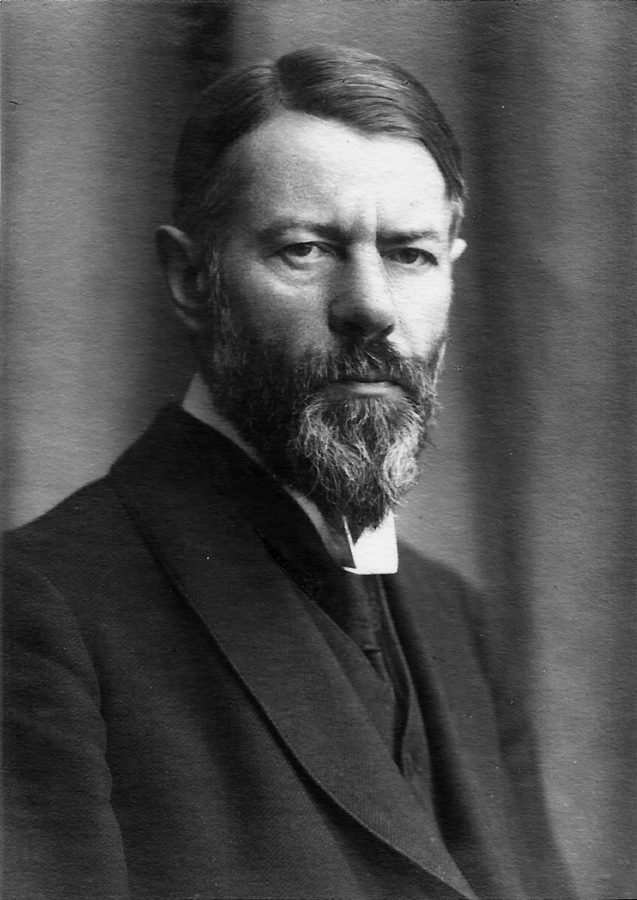
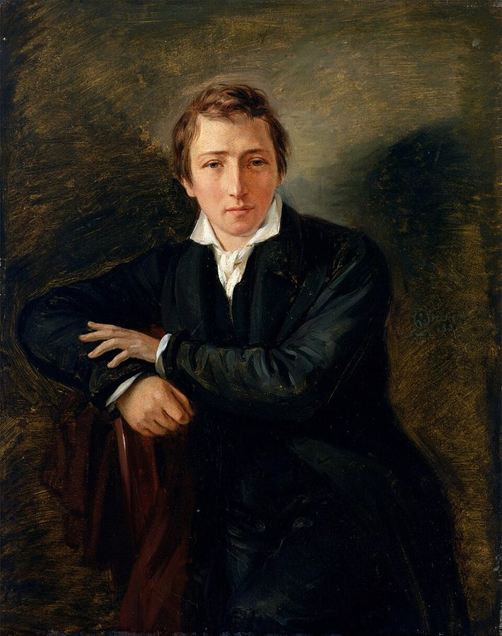
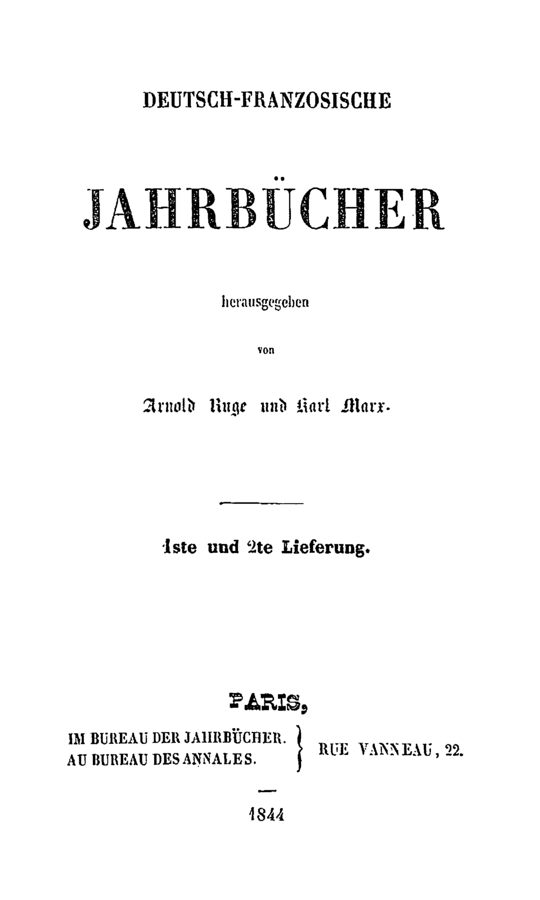

这一页在做什么
这一页三节，讲时间怎样和钱绑到一起。先是富兰克林：一则写蜉蝣的小寓言，一本出了二十多年的历书，一篇集市上的劝世讲话，一位伦敦扫街的老妇。再到韦伯：他拿富兰克林当证人，论证资本主义精神来自新教，作者在这里替他补了一环。最后一节换成海涅和马克思，时间从一个人的一生放大到一段历史：思想要多久才变成行动。读的时候抓两条线：时间怎样被当成钱来记账，和「短时间」从个人挪到历史的这一步。
富兰克林像，法国画家 Joseph-Siffred Duplessis 1778 年画。这一年富兰克林在巴黎，写了这一页第 42 段的《蜉蝣》。Joseph-Siffred Duplessis，公有领域，维基共享资源
读之前：这一页在全书的哪里
上一页（第 1、2 节）讲来世：耶稣和保罗说末日近在眼前，但丁把人的时间带进了炼狱。这一页回到此世。「时间就是金钱」第 1 章已经埋过伏笔：时间就是金钱 的源头在泰奥弗拉斯托斯，塞涅卡的比喻第 1 章第 36 段明说「见第 3 章第 3 节」；第 1 章最后那位小公务员，作者说难以想象读过富兰克林或韦伯，就是这一页的两个人。第 4 节第 55 段又回头去拿上一页的炼狱。
把时间当钱来算，这个习惯从哪里来？算到一个人身上、算到信仰里、算到一段历史上，各算出了什么账？
读的时候带着这几个问题。不用先找答案，读完回来对照「检查一下理解」。
集市上的人听完亚伯拉罕老爹的讲话，转身就去欠新债。作者为什么说，就算人人照老爹说的做，也未必是好事？§3
作者说韦伯的论证少了一环。他补上的是什么？他自己对这一环有几分把握？§4
海涅诗里那个影子为什么扛着斧头走在后面，而不是前面？这和历史走得快慢有什么关系？§5
这一页的路线
三节长短悬殊：第 3 节两千词，第 4 节不到八百，第 5 节两千多。第 3 节跟着富兰克林走了三座城：巴黎的寓言、费城的历书和集市上的讲话、伦敦的街道，每一站都是一笔时间账，作者的评语主要在第 48、50 段。第 4 节很短，从富兰克林接到韦伯，中途却回头拿上一页的炼狱：读到第 55 段觉得「怎么又说到但丁」，是作者有意把这一章的两半扣在一起。第 5 节换了题目，从个人的时间跳到历史的时间，两处花饰分成三段：海涅的预言，那首诗，马克思；第 83 段起看两人在哪里分手。这一节读着像和前面断开了，接头在「短」：这回短的是一场革命要等的时间。
§3 第 38–50 段
§4 第 51–57 段
§5 第 58–86 段
蜉蝣
历书
老爹讲话
扫街老妇
韦伯
上一页的炼狱
加尔文
海涅预言
斧头诗
马克思
分手
一个人的时间账
赎罪的时间账
一段历史要多久
本站示意图。蓝点是富兰克林和韦伯这条线，橙点是作者从上一页借回来的炼狱，绿点是第 5 节的海涅和马克思；折线是阅读顺序，虚线是节的分界，底下一行是每节算的账。 作者落在哪： 富兰克林把时间算成钱，韦伯说这种算法有宗教的根，作者假设那根是搬到此世的炼狱。海涅和马克思把同样的短时间放到历史上，结果思想变成行动，比他们以为的久得多。
分节地图
这一页是原书第 3 章的第 3–5 节。粗体是这一节的主角；斜体是英文这一节开头的几个词，在电子书里搜它就能跳到那里；节里的转折用段号点出来。读完打个勾。
富兰克林：蜉蝣、穷理查和扫街的老妇约 2000 词 In the eighteenth century, the North … 第 42 段在巴黎，第 43 段起费城，第 49 段起伦敦。作者的评语在第 48、50 段。 韦伯读富兰克林，作者补上炼狱约 800 词 In Europe, one of Benjamin Franklin's … 第 54 段说韦伯缺一环，第 55 段起是作者自己的假设。 海涅的雷声，马克思的高卢雄鸡约 2200 词 Revolutions are historical events that result, … 第 65 段起是那首诗，第 79 段起是马克思；第 83 段起两人分手。
先用中文过一遍：这一页的概念
作者常常一笔带过、默认你懂的概念，这里先从书外讲一遍：它从哪来，是什么意思。它在这一页起什么作用，看每块最后一句。讲过的概念都汇总在概念汇总 。
§4 新教伦理命题 the Protestant ethic（Max Weber） 德国社会学家韦伯 1904–05 年发表长文《新教伦理与资本主义精神》，问的是：近代资本主义为什么偏偏在新教、尤其是加尔文派流行的地方先长起来？他的回答是一条心理的链子。加尔文讲预定论：谁得救，上帝早已定好，人无从知道，于是焦虑。清教的牧师劝信徒把职业当作上帝派的「天职」，勤勉工作、不享受、不挥霍，事业兴旺被看作蒙拣选的记号。这种「入世的禁欲」挣了钱又不花，资本就一轮轮滚大。韦伯拿富兰克林的格言当「资本主义精神」的标本。他在文末说，不想拿片面的唯心解释去换掉片面的唯物解释。
在这一页： 第 51–54 段转述这个命题，第 54 段作者说它缺一环，第 55 段起自己补上炼狱。
§4 经济基础和上层建筑 base / superstructure（Basis / Überbau） 这对说法出自马克思 1859 年《政治经济学批判》的序言：一个社会的生产关系是「经济基础」，法律、政治、宗教、哲学是建在它上面的「上层建筑」；不是人的意识决定人的存在，而是社会存在决定意识。打个比方，地基怎么打，楼就怎么盖。这对词后来成了马克思主义的标签，反驳它的人则说，楼上的东西也会反过来改动地基。韦伯的新教伦理研究，常被读成这种反驳。
在这一页： 第 51 段说韦伯的理论有纠正马克思的意思（tended to correct）；第 52 段把新教的时间意识放在「上层建筑」的位置，两个词都加了引号。
§5 思想—行动模型 thought-action model 书里用这个名字（加了引号）称呼海涅的一套历史观，作者在注里说海涅 1831 年就提出了。背景是黑格尔一派的想法：历史先在思想里成熟，再在现实里实现。当时常有人拿法国和德国对照：法国人干了政治革命，德国人只在哲学里革命。海涅把这个对照排成两条错开的时间线：法国先有启蒙思想，后有大革命；德国从康德到黑格尔走完了思想这一圈，行动那一圈还在后头。他的比喻是闪电和雷声：看见闪电，雷声一定跟来，只是要等一会儿。这个模型的要害就在「等一会儿」是多久。
在这一页： 第 60–62 段讲这个模型，第 78 段的诗、第 81 段马克思的话、第 83 段的闪电和雷声都用它。
这一页还用到别页讲过的几个概念：时间就是金钱 （第 40、52 段），技艺 （第 42 段蜉蝣那句叹息），生命时间 （第 53、57 段的 life-time），炼狱 （第 55–57 段），期限 （第 47 段 deadline 第一次出场）。
书里的人和作品
按在书里出现的顺序排，标题前是节号。作品只讲到读懂这一节需要的程度。
§3 富兰克林作者用一句话交代了富兰克林的几种身份：商人、报人、政治家、外交官、避雷针的发明者。这一页跟着他走三座城：费城是他做印刷、出历书的地方；伦敦他前后住了十几年，大多住在 Craven Street；美国独立战争期间他出使法国，住在巴黎近郊的帕西（Passy）。书里说他是十七个孩子里最小的，一般的说法是他是第十五个孩子、最小的儿子，下面还有两个妹妹。第 39 段的传记作者 H. W. Brand 应为 H. W. Brands（注 20 写对了），他的书叫《第一个美国人》。第 41 段说百元美钞上印着他，至今如此。
本杰明·富兰克林 Benjamin Franklin，1706–1790 美国开国元勋之一，印刷商、作家、科学家。作者说他是把新大陆「时间问题」讲给美洲和欧洲听的人。
§3 《蜉蝣》：一只活了七个小时的老蜉蝣这是富兰克林在帕西写给邻居 Brillon 夫人的游戏文字之一，信末署 1778 年 9 月 20 日。Brillon 夫人会弹琴作曲，富兰克林每周去她家两次。他自家在帕西有一台小印刷机，这类小品印出来送朋友，后来合称 Bagatelles。书里说原作是法文；《富兰克林文集》的编者收的是一份英文底稿，在帕西印出来的是法文本。寓言里老蜉蝣叹的那句，正是希波克拉底的「生命短，技艺长」（见 01a ）。作者说，富兰克林在格言里反复训诫的那个想法，在这里换成了一则寓言。
§3 《穷理查历书》和亚伯拉罕老爹18 世纪的历书是北美人家最常买的印刷品：日历、月相、潮汐、天气预测、星象，空白处填些格言笑话。富兰克林从 1733 年起每年出一本，假托一个穷困的星象家 Richard Saunders 的名字，书名就叫「穷理查」。里面的格言大多不是他原创，是从旧有的谚语集里改写的；第 43 段作者说，时间这个话题的主要来源像是塞涅卡（见 01b）。1758 年那本的序言里，他让亚伯拉罕老爹在拍卖会前把这些格言串成一篇讲话，后来单印出来，以《致富之路》（The Way to Wealth）的书名流传。作者拿它说明：时间格言和历书这种文体天生合得来。

《穷理查历书》第一年（1733）的扉页，署名 Richard Saunders，费城 B. Franklin 印。中间一栏按希腊人、拉丁教会、罗马、犹太拉比等几种算法，列出这一年离创世多少年。Benjamin Franklin，公有领域，维基共享资源 §3 伦敦扫街的老妇和 Fothergill 医生扫街的故事出自富兰克林的《自传》第三部分。他在那里讲伦敦街道泥泞，接着讲自己给 Fothergill 医生写的清扫街道的建议。作者拿这件小事说的是另一回事：老妇有了工钱就快了一倍，富兰克林从中算出一个健壮男人只要一半时间，这笔账算对了，被算掉的却是老妇自己。
Fothergill 医生 John Fothergill，1712–1780 伦敦的贵格会医生，热心公益。富兰克林在《自传》里称他是有用计划的大推动者；这一页里他是富兰克林想拉来出钱办清扫队的人。
§4 韦伯和加尔文韦伯的《新教伦理》最初分两部分登在 1904、1905 年的社会科学杂志上，1920 年他去世前修订，收进《宗教社会学论文集》；书里的注只写 1905。文章讲「资本主义精神」时，开头就大段引富兰克林的《给一位年轻商人的忠告》，第 51 段说富兰克林是韦伯「最可靠的证人」，指的就是这里。加尔文的《基督教要义》1536 年初版是拉丁文的小书，后来一再扩充，1559 年定本；注里说的论炼狱那一章，是定本的第三卷第五章。作者拿加尔文否定炼狱这件事，给韦伯的链子补环。

韦伯，1918 年。Ernst Gottmann，公有领域，维基共享资源
马克斯·韦伯 Max Weber，1864–1920 德国社会学家、经济学家。这一页里他是富兰克林最敏锐的欧洲读者之一。
加尔文 Jean Calvin，1509–1564 法国出生的宗教改革家，在日内瓦主持改革。第 56 段他否定炼狱，是作者论证的转折点。
§5 海涅：住在巴黎的德国诗人海涅生在杜塞尔多夫的犹太家庭，以抒情诗成名，写政治讽刺也尖刻。1830 年七月革命的消息传来时，他正在北海的黑尔戈兰岛（Helgoland）度夏；第二年搬到巴黎，一直住到去世。《论德国宗教和哲学的历史》是写给法国读者看的，给他们讲从路德到德国古典哲学的思想，结尾预言德国会有一场大革命。《德国，一个冬天的童话》是 1844 年的长篇讽刺诗，二十七章，写一趟从巴黎回汉堡的冬日旅行，这一页图里的诗出自第六章，场景在科隆。书里说这首诗是第 63 段那本书「仅仅一年后」写的，两本书其实隔了九年。

海涅像，Moritz Daniel Oppenheim 1831 年画，正是海涅搬到巴黎那一年。Moritz Daniel Oppenheim，公有领域，维基共享资源 §5 马克思、《德法年鉴》和「迟到的民族」马克思 1843 年秋到巴黎，和 Arnold Ruge 合办《德法年鉴》，1844 年 2 月出了第 1、2 期合刊，此后再没有出。书里说的 On the Critique of the Hegelian Philosophy of Right，通称《〈黑格尔法哲学批判〉导言》，就登在这一册上；它不是 1843 年那部没发表的批判黑格尔国家法的长手稿。第 82 段的「高卢雄鸡」是这篇导言的最后一句。海涅也给这份年鉴写过诗。第 61 段的「迟到的民族」是德国哲学家 Helmuth Plessner（1892–1985）的书名，那本书 1935 年初版用的是另一个书名，1959 年再版才改叫《迟到的民族》。
卡尔·马克思 Karl Marx，1818–1883 德国哲学家、经济学家，比海涅小二十一岁。这一页里他接过海涅的模型，又加上了无产阶级。
海涅 Heinrich Heine，1797–1856 德国诗人。这一页里他预言德国会有一场比法国大革命更大的革命。

《德法年鉴》的扉页：Arnold Ruge 和 Karl Marx 编，「第 1、2 期」合成一册，巴黎，1844 年。马克思那篇导言就登在这一册里。公有领域，维基共享资源 图里的引文
下面这几段在你的电子书里是图片，长按查不了词，也搜不到。每块先说它在屏幕上的位置，再逐行给中文意思；行首的斜体是图里这一行开头的几个词，用来和图对上。古人的诗本站据原作的语言译，不从英译转译。
§5 第 66–77 段 · 海涅《德国，一个冬天的童话》第六章（Caput VI）· 六张英译，六张德文原文在第 65 段末尾（…reveals his emblematic nature:）之后。前六张是英译，书里没说明译者；后六张是海涅的德文，下面逐行跟德文走，一节四行，共六节。场景：深夜的科隆，诗人身后一直跟着一个蒙着脸的客人，诗人问他是谁，他这样回答。
Ich bin kein Gespenst 我不是过去的幽灵，Kein grabenstiegener Strohwisch 不是从坟里钻出来的一把稻草，Und von Rhetorik 我不爱修辞，Bin auch nicht 也不怎么讲哲学。Ich bin von 我生来讲实际，Und immer schweigsam 总是不声不响，安安静静。Doch wisse: was 可你要知道：你在心里想出来的，Das führ ich 我去执行，我去做。Und gehn auch 哪怕岁月一年年过去，Ich raste nicht, 我也不歇，直到把In Wirklichkeit, was 你想过的变成现实；Du denkst, und 你思考，而我，我行动。Du bist der 你是法官，我是差役，Und mit dem 带着奴仆的顺从，Vollstreck ich das 我执行你下的判决，Und sei es 哪怕它不公正。Dem Konsul trug 人们在执政官前面扛着一把斧，Zu Rom, in 那是在罗马，在古时候；Auch du hast 你也有你的侍从官，只不过Das Beil dir 那把斧是跟在你后面扛着的。Ich bin dein 我是你的侍从官，我走着，Beständig mit dem 一直带着那把雪亮的Richtbeile hinter dir 行刑斧，跟在你身后：我是Die Tat von 你的思想化成的行动。
英译和德文的出入：第 7 行 im Geist（在心里）英译没有译出；第 17、18 行英译把两行的次序对调了，先说罗马、后说执政官；第 23 行 Richtbeil 是专门砍头的行刑斧，英译成「审判之斧」。第 6 节德文末行「你的思想的行动」，正是第 78 段说的「行动跟着思想」。
grabenstiegener
第 2 行
（德文）从坟里出来的
图里少印了一个 t，海涅原作是 grabentstiegener：Grab 是坟，entsteigen 是从里面走出来。
Strohwisch
第 2 行
（德文）一小把稻草
Wisch 是一团、一把。客人说自己不是鬼魂，也不是稻草扎的假人，是实打实的东西。
ersonnen im Geist
第 3 行
（德文）在心里想出来的
ersonnen 是 ersinnen（想出、构思）的过去分词。im Geist 也可以读成「在精神里」，正好对应思想那一方。
Büttel
第 1 行
（德文）差役，执行判决的小吏
旧时法庭里抓人、行刑的下役，带贬义。法官动脑，差役动手。
Liktor
第 3 行
（德文）侍从官（拉丁文 lictor）
古罗马给执政官等高官开道的侍从，扛着一捆木棒，有时棒里插一把斧，象征刑罚的权力，走在官员前面。海涅偏让斧头走在后面。
Richtbeil
第 3 行
（德文）行刑的斧头
richten 是审判、处决，Beil 是斧。这一行跟上一行连读：拿着雪亮的行刑斧走在你身后。
Die Tat von deinem Gedanken
第 4 行
（德文）你的思想的行动
Tat（行动）和 Gedanke（思想）就是「思想—行动模型」里的两头，整首诗落在这一行上。
词与短语
你用 Kindle，单个生词长按就能查，这里只收词典帮不上的：每个词都认识、合起来不懂的说法，学术腔，没翻译的外文，典故。斜体小字是原句里连续的几个词，错字照电子书原样，搜它就能跳到那里。图里的词在上面「图里的引文」里。
§3 富兰克林：蜉蝣、穷理查和扫街的老妇
the father of all the Yankees
Benjamin Franklin (1706-go), whom Carlyle called
所有美国佬的父亲
书里说是苏格兰作家卡莱尔（Thomas Carlyle）对富兰克林的称呼。Yankee 原指新英格兰人，后来泛指美国人，带点调侃。
way with words
the result of his way with words
会说话、会写的本事
have a way with words 是固定说法，不是「他用词的方式」。
reduce the precipitousness and sharpness
reduce the precipitousness and sharpness of many
缓和（冲突的）急迫和尖锐
precipitous 本义是陡峭，引申为仓促、急转直下。学术英语爱用这类抽象名词连用。
Christian-Puritanical and Deistic-Enlightened
both Christian-Puritanical and Deistic-Enlightened, and
基督教清教的、自然神论启蒙的
自然神论（Deism）认为上帝造了世界就不再干预，人靠理性就能认识道德。作者说富兰克林的道德同时有这两种底色。
eye-catching and rather utilitarian
the eye-catching and rather utilitarian title
醒目、又相当功利的（书名）
指 Necessary Hints to Those that Would Be Rich（给想发财的人的必要提示）。utilitarian 在这里是只讲实用、讲好处，带一点揶揄。
Advice to a Young Tradesman
In Franklin's own Advice to a
（书名）《给一位年轻商人的忠告》
全题还有 Written by an Old One（一位老商人写）。Remember that time is money 就出自这里，韦伯后来大段引用。
it is only right that
Thus it is only right that
所以……也是理所应当
only 在这里加强语气，不是「只」。作者半开玩笑：把时间当钱的人，印在钞票上正合适。
bagatelle
by the elderly politician in a
（法文）小玩意，游戏之作
书里加了引号。富兰克林在巴黎写给朋友的一批短文，后来就合称 Bagatelles。也是音乐里「小品」的意思。
L'Ephemere
he published in 1778 in Paris
（法文书名）《蜉蝣》
正写是 L'Éphémère。éphémère 来自希腊文「只活一天的」，英文 ephemeral（短暂的）同源。
a considerable time
a considerable time of 420 minutes
相当长的一段时间
420 分钟这个换算出自富兰克林原文，是老蜉蝣自己算的：站在蜉蝣的角度说「好长」，是打趣。
life-time
minutes of life-time left. Hence
生命时间
译者用连字符把它写成术语，对应德文 Lebenszeit，见
生命时间 。这里是老蜉蝣剩下的七八分钟。
humorous self-deprecation
we discern a humorous self-deprecation that
幽默的自贬
deprecate 原是「不赞成」，self-deprecation 是拿自己开玩笑、故意说低自己。书名里的 Poor 就是这个意思。
his wise informant
the author or his wise informant
（作者的）高明的消息来源
informant 不是「线人」，是提供说法的人，指穷理查。作者故意不分哪句是富兰克林的、哪句是穷理查的，两个都提。
the most temporal of all literary genres
the most temporal of all literary
所有文体里最离不开时间的一种
temporal 这里是「和时间有关的」，不是「世俗的」（temporal 的另一个常见义）。历书按日子编，一页翻过去就回不来。
the suggestive if misleading title
under the suggestive if misleading title
引人遐想、却会让人误会的书名
A if B 是「虽然 B 却 A」的让步。书名叫致富之路，讲的却多是节俭和勤快。
sententious
in a sententious manner. His speech
爱说格言的，好说教的
来自拉丁文 sententia（格言、警句），常带贬义，指张口就是大道理。
A word to the wise is enough
I'll give it you in short,
聪明人一句话就够
古老的谚语，拉丁文是 verbum sat sapienti。老爹拿它为自己说得短找理由。
Many words won't fill a bushel
won't fill a bushel,' as Poor
话再多也装不满一斗
bushel 是量粮食的斗（蒲式耳）。空话不顶饭吃。
captatio benevolentiae
as a captatio benevolentiae-by a glance
（拉丁文）博取好感的开场
古典修辞的术语，演说开头先说听众爱听的。老爹先骂税太重，人人点头。
the stuff life is made of
for that's the stuff life is
生命就是用它做成的
stuff 是料子、材料。这句是穷理查的格言，说时间是生命的料子。
time enough … little enough
What we call time enough always
我们以为够用的时间，到头来总是不够
两个 enough 对着用：time enough（时间足够）对 little enough（少得可怜）。
running into debt
the first is running into debt
欠债
run into debt 是陷进债里，不是跑。老爹说撒谎是第二大恶，欠债是第一。
repayment deadlines
lenders remember repayment deadlines better than
还款的期限
deadline 这个词在全书里第一次出现。期限这个主题要到第 8 章才正式讲，见
期限 。
fateful days and hours
sharper eye for fateful days and hours
事关命运的日子和时辰
那时的历书里本来就印着星象和吉凶日。老爹照穷理查的话说，债主像盯着星象的天文学家，对到期的日子眼尖得很。
added wings to his heels
added wings to his heels as
（时间）跑得飞快
画里的时间老人肩上有翅膀；这里说欠债的人觉得，时间连脚跟上都长了翅膀。
Those have a short Lent
who owe money to be paid
复活节要还钱的人，嫌大斋期太短
大斋期（Lent）是复活节前四十天的斋戒期，本来人人嫌长；欠着复活节到期的债，就嫌它短了。
practiced the contrary
and immediately practiced the contrary
马上反着做
practice 是「实行」。整句是富兰克林自己的收尾：大家听了、叫好，转身就反着来。
with abandon
they buy with abandon and contract
放开手脚地，毫无节制地
abandon 作名词是「放纵」，不是「放弃」。contract 在这里是欠下（债）。
an accident
told Fothergill about an accident that occurred
一件偶然碰上的事
accident 的老意思是偶然的事，不是事故。门前没出什么事，只是碰见了一个扫街的老妇。
with payment in view
afterward, with payment in view, she
有了工钱的盼头
in view 是在望、可以指望，不是「看得见钱」。
One can only wonder
One can only wonder, however, whether
不免叫人怀疑
字面是「只能纳闷」，实际是委婉地表示不以为然：老妇多半不会被雇。
a matter of simple arithmetic
this is a matter of simple arithmetic
一道简单的算术题
意思是道理不难懂：要用人最少，就雇最快的人。作者的口气是冷冷的。
at her own expense
almost wholly at her own expense
代价几乎全落在她自己身上
at one's expense 有两义：自己掏钱，或吃亏的是自己。这里是后一种：这一课是拿她自己的饭碗换来的。
such as would be found only in
would be found only in the greatest
只有在……那里才找得到的那种（课）
这是夸她：扫街的老妇讲的道理，够得上最伟大的经济理论家。作者在替被算掉的人记一笔。
§4 韦伯读富兰克林，作者补上炼狱
theory of society based on prototypes
Weber's theory of society based on prototypes
以典型为基础的社会理论
韦伯社会学的招牌方法是「理想型」（ideal type）：把一种现象最纯粹的样子提炼出来，再拿现实去对照。这里的 prototypes 大概指的就是它。
being does not always determine consciousness
being does not always determine consciousness
存在并不总是决定意识
套的是马克思的名句「社会存在决定意识」，见
经济基础和上层建筑 。not always 是作者的分寸：韦伯只说反过来也成立，没说马克思全错。
superstructure / base
that in Weber's view determines the
上层建筑 / 经济基础
书里两个词都加了引号，表示是借马克思的术语，却反着用：在韦伯这里，是上层的宗教决定下面的经济。
a commodity that is in short supply
managed as a commodity that is in
一种短缺的商品
in short supply 是供不应求。把时间说成商品，正是全书讲的时间经济。
rigorous exploitation of oneself and others
through rigorous exploitation of oneself and others
对自己和别人的严酷压榨
exploitation 也是马克思的「剥削」。作者加上 oneself：早期资本家最先压榨的是自己。
working capital
into working capital that can in
营运资本
会计术语，指能投进生意周转的钱，不是「工作的资本」。作者说生命时间先换成它，再投出去。
Happy as well?
rich. Happy as well?
也幸福了吗？
只有三个词的反问，接在「西方世界富了」后面。作者不答，答案读者自己想。
missing link
the missing link in Weber's chain
缺失的一环
本来是进化论的说法，指猿和人之间还没找到的过渡物种。作者借来说论证链条上的空缺。
if not in substance, at least etymologically
if not in substance, at least etymologically
实质上未必，至少词源上
if not A, at least B：就算不是 A，起码是 B。作者自己承认，炼狱和清教的相近，可能只在字面上（都来自拉丁文 purus，纯净）。
salvation account
on the sinner's salvation account
救赎的账户
作者一路用记账的比喻：账户、余额、结算。下一段的 balance sheet、下下段的 register 都是一套。
cutting it close
a sinner who is cutting it close
把时间卡得很紧、走钢丝
cut it close 是留的余地很小，差一点就来不及。这样的罪人指望炼狱兜底。
draw a line across his balance sheet
does not draw a line across his
在他的账本上画线结账
记账时在最后一行下画线，表示结清。这里指突然死去，来不及忏悔。
rather un-Latin
(and rather un-Latin) reformer Jean Calvin
不怎么「拉丁」的
加尔文是法国人，又用拉丁文写书，作者却说他不太拉丁。作者没解释；本站的读法是：说他严厉，不像拉丁世界的天主教那样肯通融。
presumptuous prattle
dismissed it as presumptuous prattle
狂妄的胡扯
prattle 是喋喋不休的空话。这是作者转述加尔文的态度，后面引号里才是加尔文的原话。
a pious or not so pious prudence
a pious or not so pious prudence
虔诚也好、不那么虔诚也好，总之是精明
prudence 是审慎、会算计。作者暗示：推动禁欲的未必是信仰，也可能是算盘。
assuming that his reckoning is correct
assuming that his reckoning is correct
前提是他的账没算错
reckoning 是算账，也有「清算」的意思（day of reckoning 指末日审判），放在这里两层意思都读得通。作者的保留：这一切都建立在信徒自己的账上。
anticipated his individual Purgatory
has already anticipated his individual Purgatory
已经把自己那份炼狱提前过完了
anticipate 在这里是「提前做掉」，不是「预期」。这句就是节名 A Purgatory in This World 的意思。
§5 海涅的雷声，马克思的高卢雄鸡
bourgeois king
the July Revolution that put the
市民国王
书里加了引号，是路易-菲利普（Louis-Philippe）的外号，法文 roi bourgeois。他是 1830 年七月革命后上台的国王，以市民作风示人。
Metternich's restoration government
threats of Metternich's restoration government
梅特涅的复辟政府
拿破仑倒台后，奥地利首相梅特涅主导欧洲恢复旧王朝秩序，德意志各邦审查严厉。海涅的书在德国常被禁。
on the other side of the Rhine
on the other side of the Rhine
莱茵河对岸，也就是德国
从巴黎看，莱茵河那边就是德国。第 86 段的 both sides of the Rhine 就是法德两国。
thought-action model
inspired by Madame de Stael and Hegel
思想—行动模型
书里 thought-action 加了引号，搜它前面的 This is Heine's 或后面这几个词。见概念块
思想—行动模型 。斯塔尔夫人的《论德国》（1813）把德国介绍成思想者的国度。
out of phase
these cycles are out of phase with
错开了一拍
物理学的「相位不同」。法国的思想和行动两圈接连走完，德国的却晚了一圈。
belated nation (verspatete Nation)
(Plessner, verspatete Nation), had passed through
迟到的民族
德文是 verspätete Nation，电子书丢了变音。说德国统一和近代化都比英法晚，见上面的人和作品。
coined and put it into circulation
coined and put it into circulation
造出来并让它流通开
coin 是铸币，put into circulation 是投放流通，说造词也用钱的比喻。多出来的 it 是英译的语病。下一段作者自己补了一句：1835 年的书里就已经有这个词。
Thought precedes action
Thought precedes action the way lightning
思想走在行动前面，就像闪电走在雷声前面
海涅的话，这一节的核心比喻。光比声音快：先看见闪电，雷声随后一定到。
tuck in their tails
will tuck in their tails and
夹起尾巴
吓坏了。海涅想象德国的雷声响起时，连非洲沙漠里的狮子都要躲回窝里。
a harmless idyll
might seem only a harmless idyll
一首无害的田园诗
idyll 是写乡间宁静生活的小诗。和德国将来的那场戏相比，连法国大革命都显得温和：海涅的夸张。
Only a year later
Only a year later, in his
仅仅一年后
书里的年份对不上：前面那本书是 1835 年，这首诗是 1844 年，相隔九年。照年份读就是。
emblematic nature
finally reveals his emblematic nature
他所象征的身份
emblem 是徽章、象征。客人亮出的不是名字，而是他代表什么：诗人思想的行动。
alter ego
encounters an alter ego who follows
（拉丁文）另一个自我
字面是「另一个我」。蒙面客人就是诗人自己行动的那一半。
avant la lettre
even a Marxist avant la lettre
（法文）在这个名称出现之前的
字面是「在字母之前」。说海涅在还没有马克思主义这个词的时候，已经有马克思主义的想法。
at least as much a Heinean
Marx was at least as much a
至少同样是个海涅派
at least as much A as B：说 A 不比说 B 更夸张。作者把通常的说法反过来：不是海涅受马克思影响，至少两边一样。
allowed himself to be lent
at first allowed himself to be lent
先任由别人把（名头）借给他
英译的句子绕：海涅起先由着别人把「黑格尔弟子」的权威和光环加在他身上，后来索性欣然接受。
Deutsch-franzosische Jahrbiicher
in the Deutsch-franzosische Jahrbiicher. This
（刊名）《德法年鉴》
正写是 Deutsch-Französische Jahrbücher，见上面的人和作品。
In politics, the Germans have thought
In politics, the Germans have thought
在政治上，德国人想了别的民族做过的事
马克思导言里的话，把思想—行动模型压成了一句。
peroration
with a moving peroration that announces
（演说的）结束语
古典修辞的术语，演说最后一部分，总括全篇、打动听众。
the crowing of the French cock
by the crowing of the French
法国公鸡的啼叫
高卢雄鸡是法国的象征，马克思原文就写「高卢的公鸡」；公鸡报晓，又接上前面的复活日。意思是：等法国再起革命，德国的革命就来了。
orchestrated
he orchestrated numerous literary incarnations of
（把一个主题）编配成
本义是给乐曲配器。海涅把同一个法德对照写成许多不同的文学版本，像同一段旋律配上不同的乐器。
reality must impel itself toward thought
reality must impel itself toward thought
现实本身也必须趋向思想
马克思导言里的话。光有思想推动行动不够，现实自己得走到那一步。作者接着解释：这股现实的力量就是无产阶级。
the emancipation of Germans into men
the emancipation of Germans into men
德国人被解放成为「人」
into men 不是「解放进男人」，是解放成真正的人。马克思在说，德国人当时还算不上完整意义上的人。
laurel forests
They cut down my laurel forests
我的月桂林
月桂冠是诗人的荣誉。海涅担心掌权的民众砍掉诗歌，种上实用的土豆。
recorded on another page of world history
recorded on another page of world history
记在世界史的另一页上
作者不展开：后来真来的革命，和海涅、马克思预想的不是一回事，那是另一本账。
读不通的扫描错字：
… Benjamin Franklin (1706-go), whom … 应为 1706–1790。… a recent biographer, H. W. Brand, … 应为 H. W. Brands（注 20 写对了）。… Helas, fart est long et la … 应为 Hélas, l'art est long et la vie est brève（唉，技艺长而生命短）。… far less injuriousand here Father … 应为 injurious—and，中间是破折号。… watchmen.1121 One can only … 1121 不是数字，是句末的引号和注号被认错了。… can in turn be investedwithout being … 应为 invested—without，中间是破折号。… (pazi fake Mission) of opening … 括号里是德文「和平的使命」，一个词被拆成两段、认错了字母。… (Zur Kritih der Hegelschen … 应为 Kritik。
读完：作者到底说了什么
读完这一页的几节再看。下面是作者在这几节里的论点，由本站按论点重新组织，不按原书的顺序；每条右上角是依据所在的段落，拿不准就回书里那几段再读一遍。
「时间就是金钱」是一套时间的道德，不只是生意经 作者说，富兰克林的信念出自清教和启蒙两种道德，起点是上帝给的时间，要像钱一样精打细算；这句格言长久左右了英美清教的社会意识。
§3 第 40、41 段 照这套时间经济做下去未必是好事，代价落在弱者身上 作者借一位「现代的穷理查」说：人人都像老爹那样节省，整个经济会变糟。扫街的老妇在他看来几乎是拿自己当代价，上了一课资本主义的时间经济；他怀疑清扫队会不会雇她。
§3 第 48、50 段 韦伯的论证缺一环，作者假设这一环是炼狱 韦伯说，禁欲带来的财富被看作蒙拣选的记号。作者觉得这里缺了一环，明说是自己的假设：缺的是天主教的炼狱，它和清教主义实质上未必相近，至少词源上相近。
§4 第 54、55 段 没有炼狱，就得在此世先把罪赎掉 加尔文否定炼狱，死后的补救没了。信徒出于精明，要活着时用禁欲先赎罪；顺带攒下的财富，被当作赎罪账户良好的记号。
§4 第 56、57 段 历史也被算成短时间，可思想变成行动比预想的久得多 海涅预言德国一代人之内就有革命；马克思接过这个模型，但要有无产阶级才行。作者说，莱茵河两岸从思想到行动，都比两人设想的久得多。
§5 第 62、83、86 段
合起来： 这一页把「时间像钱」推到了头：富兰克林写成格言，韦伯追到信仰，作者再假设根子在炼狱。海涅和马克思把同样的算盘打到历史上，作者提醒，这笔账算得太快了。
第 3 章合起来： 这一章看有限的时间在来世和此世怎样记账，货币就是时间。第 1 节，末日被说成只剩「一会儿」，平常的经济算计不作数；末日推迟，时间又回到原来的长短。第 2 节，炼狱把人的时间带进来世，罪要按时间偿还，上帝也成了可以打交道的算账人。第 3、4 节回到此世：富兰克林把时间算成钱，韦伯给它找宗教的根，作者假设缺的一环是炼狱：加尔文派没有炼狱，只好在此世先赎。第 5 节把短时间放大到历史，从思想到行动却比预想的久得多。
值得停下来的句子
I hypothesize that the missing link in Weber's chain of argumentation is the Catholic Purgatory— §4 第 55 段。本站译：我的假设是，韦伯论证链条上缺的那一环，是天主教的炼狱。
全句的分量压在第一个词 hypothesize 上：作者把自己的补充老老实实标成假设。missing link 接着上一段的同一个词，chain of argumentation 把论证想成一条链子，炼狱是嵌进去的一个环。紧接着的 if not in substance, at least etymologically 又往回收了半步。读这一节，要把「韦伯说的」和「作者猜的」分开。
on both sides of the Rhine the passage from thought to action took much longer than Heine and Marx had assumed.— §5 第 86 段。本站译：在莱茵河两岸，从思想到行动，都比海涅和马克思设想的久得多。
这一节的最后判断，几乎是平铺直叙。the passage from thought to action 把海涅的模型压成一个名词短语，much longer 回答了整节一直悬着的问题：闪电之后的雷声，要等多久。both sides 很要紧：慢的不只是「迟到的」德国。
检查一下理解
先在心里答，再点开。答错的那题，回书里把对应那一节再读一遍。
1.（§3）《蜉蝣》里老蜉蝣叹的那句话是从哪来的？作者为什么特意提它？ 是希波克拉底的「生命短，技艺长」，全书的起点。作者拿它说明，富兰克林在格言里讲的时间道理，在这则寓言里换了个说法：人也是蜉蝣。
2.（§3）债主和欠债的人，谁更记得还款的日子？「复活节要还钱的人，大斋期就短」是什么意思？ 债主记得更清楚，像盯着吉凶日子的观星人。欠债的人觉得期限飞快逼近，连平时嫌长的四十天斋期都显得短了。这里 deadline 第一次在书里出现。
3.（§3）扫街的老妇给了富兰克林什么启发？作者在这件事里看到了什么富兰克林没说的？ 富兰克林看到有工钱她就快了一倍，算出健壮男人更省时间，提议办常设的清扫队。作者疑心老妇根本不会被雇：这一课时间经济，是拿她自己当代价上的。
4.（§4）作者说韦伯的论证缺了哪一环？他对自己补的这一环有多大把握？ 缺的是：为什么禁欲的人一定要在此世就看到财富，当作得救的记号。作者假设缺环是天主教的炼狱，并明说这是假设；他也承认炼狱和清教主义实质上未必相近，至少词源上相近。
5.（§4）为什么没有了炼狱，加尔文派的信徒反而要过得更严？ 天主教徒可以指望死后在炼狱里补赎。加尔文否定了炼狱，罪就得在活着时用禁欲先赎掉，等于把炼狱搬到了此世。顺带攒下的财富，被看成赎罪账户情况良好。
6.（§5）海涅诗里的侍从官为什么把斧头扛在执政官后面？ 罗马的规矩是斧在官前开道。海涅反过来，是要说行动跟在思想后面：诗人是想事的法官，影子是动手的差役。作者说这是那个思想—行动模型的比喻。
7.（§5）马克思和海涅在哪一点上分开了？ 海涅把从思想到行动看成像闪电之后必有雷声的自然规律，革命会自己来。马克思说现实自己也得趋向思想，要有无产阶级这股力量才行。海涅则越来越相信世界革命会在他有生之年自己到来，离马克思越来越远；晚年想到民众掌权，他看到的是月桂林被砍掉种上土豆。
用一句话说这一页，写给一个没读过的人。
想一想：你有没有给自己定过一套省时间的规矩，比如番茄钟、每日计划、效率工具？省下来的时间后来去了哪里：拿来享受了，还是又投进了下一件事？
精彩回顾
读过又忘了，从这里想起来。挑的是这一页最值得记住的人、说法和比喻，不按原书顺序；每条后面是节号，想细看就回书里那一节。全书各页的这一节都收在全书回顾 。
一句话： 富兰克林把时间算成钱，作者顺着韦伯往下挖，假设它的根是搬到此世的炼狱；海涅和马克思把同样的短时间算到历史上，却算快了。
七个小时的老蜉蝣 富兰克林的寓言里，一只活了 420 分钟的老蜉蝣，只剩七八分钟，叹的是「技艺长，生命短」。人也是蜉蝣。
§3 复活节前的大斋期 穷理查说，复活节要还钱的人嫌大斋期短。债主比欠债的人更记得日子：deadline 这个词在全书第一次出场。
§3 扫街的老妇 有了工钱，她扫得快了一倍。富兰克林算出健壮的男人只要一半时间；作者说，这一课资本主义的时间经济，是她拿自己当代价上的。
§3 此世的炼狱 作者假设韦伯缺的一环是炼狱：加尔文否定了它，信徒只好活着时用禁欲先赎罪，攒下的钱成了好兆头。
§4 扛在后面的斧头 海涅诗里，蒙面的侍从官扛着行刑斧跟在诗人后面：行动跟着思想。可从思想到行动，比海涅和马克思以为的久得多。
§5